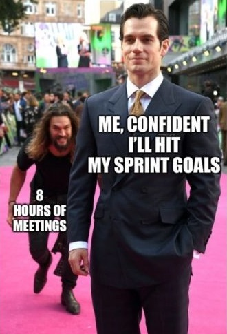

Week 3: Interviewing customers; holding effective meetings#
Interviews#
Read the chapter on interviews. We will experiment a bit with some interview questions.
Recall the difference between closed and open questions: closed questions have a yes/no/maybe/don’t know answer, while open questions invite a response.
Closed: “Do you like studying computer science at university?”
Open: “Tell me one thing that you like about studying computer science at university”
Exercise 1: Testing open vs closed questions#
⏱️ 50 minutes - Pairs and team
Devices (other than smart phone) not required for this discussion
You will need a mobile phone with audio recording capabilities for this exercise (or some other recording device).
By now, you should be considering what challenges you may be considering. If not, this may help you decide!
Step 1: Draft open and closed interview questions#
As a team, choose one (or more!) of the challenges, and write a two general questions about each challenge that you have chosen: one open and one closed.
For example:
Closed: “When you were doing X at UQ, did you encounter any difficulties in …?”
Open: “Tell me about any difficulties you encountered while you were doing X at UQ.”
Step 2: Gather data#
You can do this independently as pair (or trio if you have an odd number of people):
Go out to the campus and then:
Each team member should approach two different students (outside of their team) and ask each of them a question: one open and one closed.
First, introduce yourself (as outlined in interviews) and state that you just want to ask one question for a course.
Second, ask for permission to audio record their answers, as outlined in the chapter on interviews. Be sure to let participants know they can decline to answer or stop the recording at any time.
If they agree, ask the open or closed question, and record their response using the audio recorder.
Feel free to ask follow-up questions to learn more about their experience related to the challenge that you chose.
Thanks the participant, and move on.
Step 3: Compare#
Devices closed for this discussion
Once each team member has interviewed two different people, return to the classroom. You should have 4-5 responses to the closed question and 4-5 responses to the open question.
Find a platform that can transcribe your interview questions into text – there are many available online. Choose one that all team members will use.
Share the transcripts with each other.
As a team, compare the two (open vs. closed) questions.
In your comparison, use the following criteria:
Length: Is one longer than the other on average?
Context: Which response gave you more context or background?
Comfort: Did the interviewee seem more comfortable or willing to elaborate in response to one type of question?
Perspective: Which question helped you understand the interviewee’s perspective better?
Clarify: Did either question lead to a clearer understanding of the challenge?
Future practice: Based on this experience, how might you change your interview questions in future?
Creating Effective Meetings#
⏱️ 20 minutes - Individual
Devices closed for this discussion
The thought of meetings can send some people into existential dread, either through bad prior experiences or having to deal with talking to people for an hour (or longer). Unfortunately, meetings have developed a bad reputation because they are often misused by management, administrators and leaders.

Universal Meeting Structure and Rules#
There is a generalised meeting structure that can be applied to any meeting to improve flow and ensure the meeting achieves all its objectives. Additionally, there are a set of specific general ground rules for meetings to guarantee meeting members and facilitator stay focused and on task.
Discussion: Universal Meeting Structure (Agenda)#
Devices closed for this discussion
Purpose: What do you want to achieve in the meeting? Explicitly stating this will provide context before the meeting begins.
Participants: Who is expected to be there? Assign a chair (who will run the meeting) and a note-taker.
Discussion Points: What are the topics, issues or problems? Identify who will lead each discussion point.
Tip
Research shows that if you write the discussion point item on your agenda as what outcome you want from the meeting, it focuses the attendees. So instead of: “Prototype” or even “Discuss prototype features”, write the point as: “Identify which features we will prototype”.
Times: Assign a start time each item, and stick to it! If it is clear this needs more time, ‘park’ it until the end of the meeting, and defer to another meeting if you don’t have time at the end.
Action Items: Those things that need to be done after the meeting. These are things that should go on your team planner, such as on Trello. So, an action item should say: who does what by when?
Supporting Documentation & Materials: Anything else you need; e.g. if you want to discuss how you are going to assign software features to be implemented by team members, have the list of features ready.
Every meeting type will be different, but in general these are the most critical requirements of a meeting. This structure is a suggestion and should be moulded to requirements.
Universal Meeting Rules#
Devices closed for this discussion
Have a meeting chair: Someone should run the meeting.
Pre-publish an agenda: This ensures the smooth flow of the meeting and keeps it focused on required aims and goals. It should have at least:
Meeting start time.
A list of items to be discussed.
Start times for each specific item.
Meeting end time.
Start on time: If you start late, people will know they can show up late next time. To help with this:
Be early: It takes time to settle. If the meeting starts at 1100h, show up 2-3 minutes early so you can settle and prepare yourself.
Use a time-keeper: Someone needs to identify that time is nearly up for an agenda item.
Follow the agenda: Anything off-topic should be parked for later.
Use a “parking lot”: A “parking lot” is time at the end (if any) to discuss things that were parked.
Assign actions: Whenever the attendees agree that something should be done, write down who does what by when and send this around.
Publish notes: Notes are not minutes. Minutes are usually a legal requirement and are done by professional stenographers. In short, notes are simply:
What was decided?
Who will do what and by when?
Continuously Improve: Periodically revisit how your meetings work and whether they are working well. Be adaptable and evolve.
Meeting Agenda Draft#
Devices closed for this exercise
Now that you have an understanding of meeting types, a general meeting structure and general meeting rules, it is good practice to develop a draft meeting agenda for your first team meeting.
Your task:
Write an agenda for your next team meeting. Follow the structure from the section on the universal meeting structure.
Show your Legend your agenda, and they will give feedback on what works and what doesn’t.
Refine your agenda based on the feedback.
Outside of the class, hold the meeting!
It takes just a few minutes to create an agenda, but it can make meetings that much more effective and far less mind-numbingly boring!
Exit ticket#
Your exit ticket for this week’s studio is to:
Discuss (with your legend) what you found from your interviews
Show your legend your meeting agenda for your next meeting, including when you will have the meeting.
Bonus material#
Saving the world from bad meetings - David Grady#
🌐 https://www.youtube.com/watch?v=F6Qo8IDsVNg
Bad meetings make people miserable. Here are some ideas to stop it.